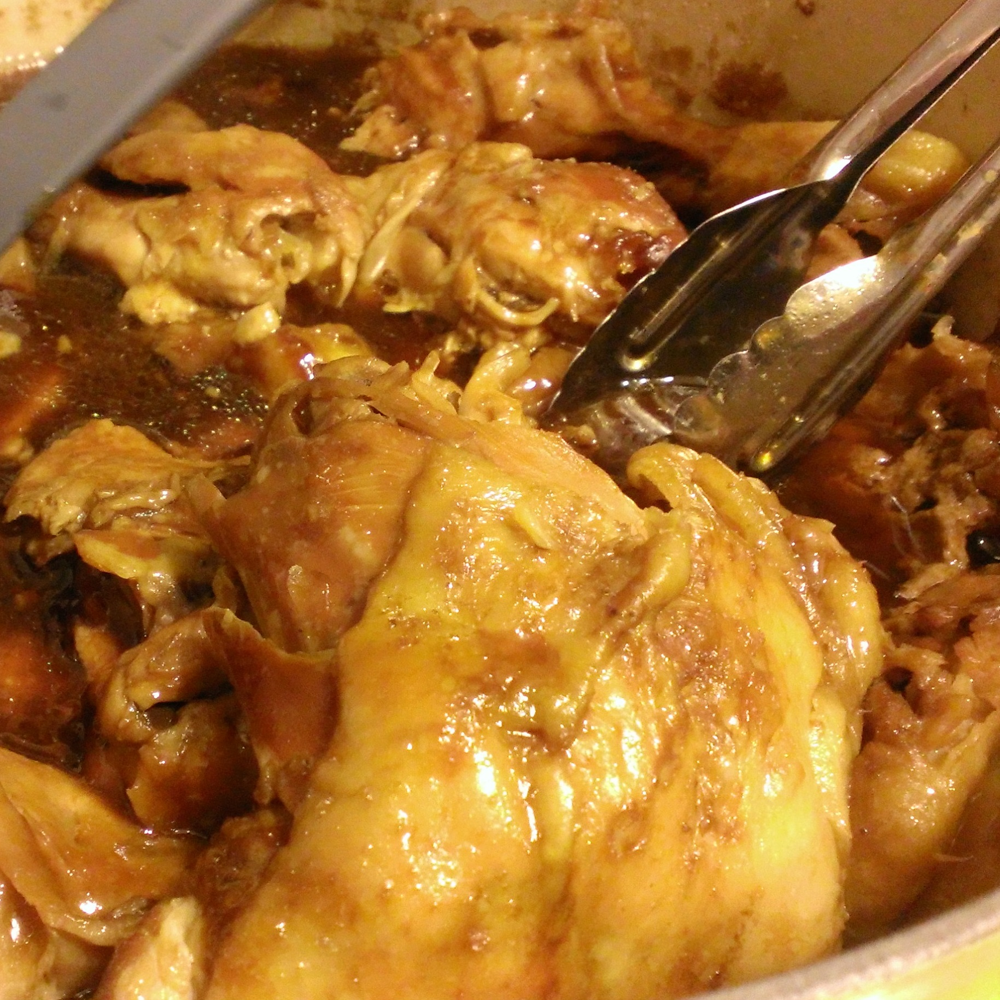
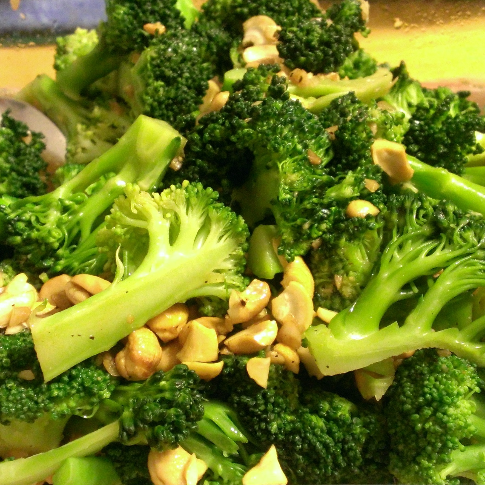

| Spam Musubi |
| Tofu Katsu Musubi |
| Shoyu Chicken |
| Kalua Pig |
| Cashew Broccoli |
| Vegetarian Nishime |
| Chocolate Dobash Cake |
| Lilikoi Cheesecake |
Sauteed spam incased with white rice and wrapped in nori (dried seaweed). For an added flair consider adding fried eggs.
Similar to Spam Musubi but safe for vegetarians. The tofu is coated with a flour, egg, panko wash and fried to perfect crispiness. Homemade teriyaki sauce completes the dish.

Chicken thighs and drumsticks slowly cooked in a soy sauce broth until the meat is soft, tender and tasty.
In the Hawaiian language kalua means to cook in an underground oven. Traditionally a pig is cooked in a big pit with hot rocks. This rendition can be reproduced using a slow cooker, liquid smoke and Hawaiian salt.

Broccoli coated with a cashew sauce.
With more of a Japanese influence this dish includes daikon radish, fried tofu and braided konnyaku.